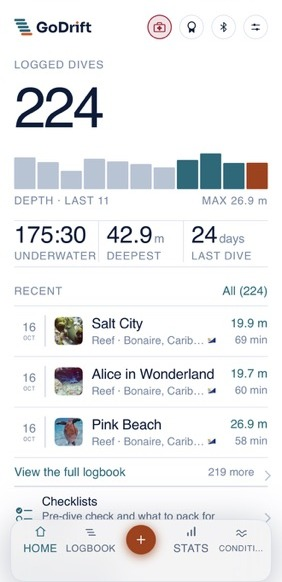
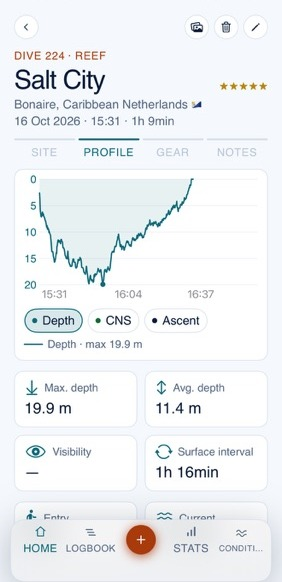
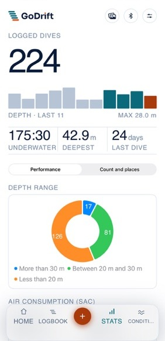
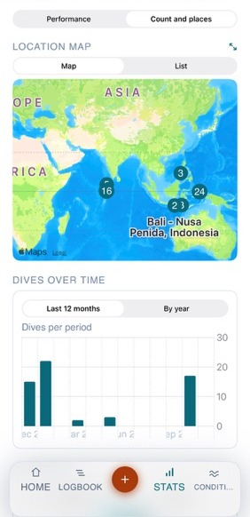
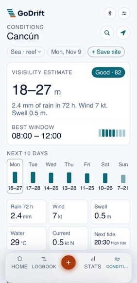
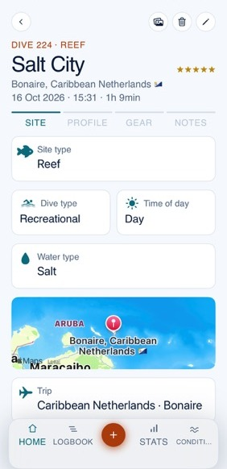
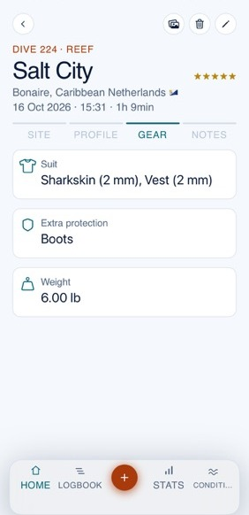
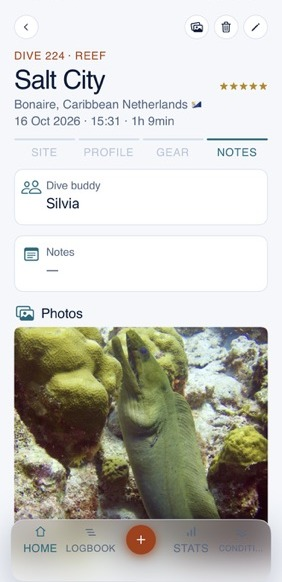

Your Shearwater downloads and your own notes become a logbook you will want to open: depth profiles, photos, buddies, stats and a map of everywhere you have been.
Download on the App StoreFree to download. No account, no ads.


Your Shearwater sends its dives to your iPhone over Bluetooth while you rinse your gear. Bluetooth import is included, with nothing to buy for your computer's brand.
Time underwater, deepest dive, air consumption, dives per month and a map that fills in with every trip. Tap any number to open the dives behind it.


Visibility estimate, 10-day forecast, hourly weather, swell, currents and tides for any dive site, with the best window of the day. Save your favorite sites and keep them on your Home Screen.
A planning aid built from weather and sea data. It does not replace a local briefing.

The site, the suit and the weight, who you dived with, and the photo of the moray. Everything that makes a dive that dive.



Start with the next one.
Download GoDriftFree to download. No account, no ads.